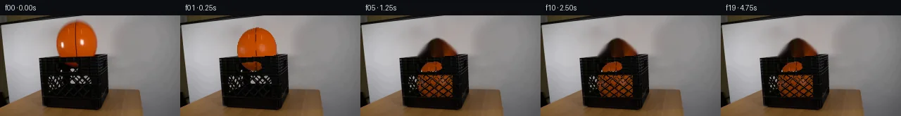

![首帧]()

Round 00
2026-11-04T20:30:58.159770+00:00像素候选变化代码 +223/−0inspection 更新
pixels 34efa3af80044cbf · code 2db7ec64194682ed
查看本轮 generate.py 真实 diff
--- previous/generate.py
+++ current/generate.py
@@ -0,0 +1,223 @@
+"""Local source-pixel reconstruction and analytic occluded ballistic motion."""
+from pathlib import Path
+import base64
+import json
+import re
+
+import cv2
+import numpy as np
+from PIL import Image, ImageDraw
+from scipy.ndimage import distance_transform_edt, gaussian_filter
+
+from artifact_io import save
+
+ROOT = Path(__file__).resolve().parent
+H, W = 144, 256
+SOURCE = np.asarray(Image.open(ROOT / 'first_frame.png').convert('RGB'))
+Y, X = np.mgrid[:H, :W].astype(np.float32)
+CX, CY, RX, RY = 108.60, 40.27, 28.37, 31.57
+GRAVITY, FLOOR_Y, RESTITUTION = 260.0, 96.0, 0.38
+
+
+def smoothstep(a, b, value):
+ z = np.clip((value - a) / (b - a), 0, 1)
+ return z * z * (3 - 2 * z)
+
+
+def polygon(points):
+ result = np.zeros((H, W), np.uint8)
+ cv2.fillPoly(result, [np.asarray(points, np.int32)], 1)
+ return result.astype(bool)
+
+
+# Original front and side plastic always occupy fixed image coordinates.
+crate = polygon([(55, 62), (129, 58), (152, 55), (154, 110),
+ (144, 133), (133, 135), (60, 130)])
+front = polygon([(57, 63), (129, 60), (133, 128), (61, 127)])
+orange = ((SOURCE[..., 0].astype(float) > 1.55 * SOURCE[..., 1]) &
+ (SOURCE[..., 0] > 85) & (SOURCE[..., 1] > 15) &
+ (SOURCE[..., 2] < 70) & (X > 75) & (X < 145) & (Y < 75))
+
+# Inpaint the exposed wall only. The opaque crate is excluded from this mask.
+wall_erase = ((((X - CX) / (RX + 5)) ** 2 +
+ ((Y - CY) / (RY + 4)) ** 2 < 1) | orange) & ~crate
+base = cv2.inpaint(SOURCE, wall_erase.astype(np.uint8) * 255, 5, cv2.INPAINT_NS)
+base[crate] = SOURCE[crate]
+# Remove the initial tiny glimpse of the ball within the dark handle aperture.
+handle_orange = orange & crate
+base[handle_orange] = np.array([5, 5, 3], np.uint8)
+
+# Obtain a full ball texture from its visible source hemisphere. Unknown lower
+# pixels are reflected from the upper hemisphere and shaded downwards.
+TX0, TY0, TS = 75, 5, 70
+ty, tx = np.mgrid[TY0:TY0 + TS, TX0:TX0 + TS].astype(np.float32)
+u, v = (tx - CX) / RX, (ty - CY) / RY
+rho = np.sqrt(u * u + v * v)
+alpha = 1 - smoothstep(0.986, 1.024, rho)
+known = orange[TY0:TY0 + TS, TX0:TX0 + TS] & (ty < 59) & (rho < .995)
+source_crop = SOURCE[TY0:TY0 + TS, TX0:TX0 + TS].astype(np.float32)
+_, nearest = distance_transform_edt(~known, return_indices=True)
+texture = source_crop[nearest[0], nearest[1]].copy()
+mirror_y = np.clip(np.rint(2 * CY - ty - TY0), 0, TS - 1).astype(int)
+mirror_x = np.clip(np.rint(tx - TX0), 0, TS - 1).astype(int)
+mirrored = texture[mirror_y, mirror_x]
+missing_lower = (ty >= 59)
+shade = (1 - .31 * np.clip(v, 0, 1))[..., None]
+texture[missing_lower] = (mirrored * shade)[missing_lower]
+# Use the original RGB texture for all confidently observed surface pixels.
+texture[known] = source_crop[known]
+# Source seam is continued across the hidden lower hemisphere.
+seam_x = CX - .7 + .45 * v
+seam = np.exp(-((tx - seam_x) / .56) ** 2) * (ty >= 59)
+texture *= (1 - .45 * seam[..., None])
+# Avoid creating bright reflected source highlights on the hidden lower half.
+lower_highlight = missing_lower & (texture.mean(2) > 150)
+texture[lower_highlight] *= .65
+
+# Refine the actual upper silhouette using the source orange component. Only
+# its edge is affected; the dark central seam remains opaque.
+observed_alpha = gaussian_filter(known.astype(np.float32), .36)
+edge_refine = (ty < 56) & (rho > .92)
+alpha[edge_refine] = observed_alpha[edge_refine]
+
+# The front's two diagonal families are inferred by Fourier fitting the dark
+# source lattice in rows 99:116. Their differing pitch captures perspective.
+luminance = SOURCE.astype(np.float32).mean(2)
+mesh_region = front & (X >= 65) & (X <= 130) & (Y >= 85) & (Y <= 116)
+def ridge_distance(sign, slope, period, phase):
… diff truncated; 136 more lines …